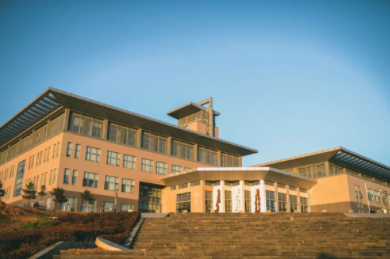

 大连民族大学（Dalian Minzu University）位于辽宁省大连市金州区，直属于国家民族事务委员会，中央部委直属高校，由中华人民共和国教育部、国家民族事务委员会、中国科学院、辽宁省人民政府、大连市人民政府共建，是以工科和应用学科为主的综合性民族高等学校；入选国家教育体制改革试点学校、全国首批大学英语教学改革示范学校、首批全国毕业生就业典型经验高校、国家级大学生创新创业训练计划、教育部首批新工科研究与实践项目，由大连理工大学对口支援大连民族大学，CDIO工程教育联盟成员单位。据2015年12月学校官网信息显示，学校有教职工1305人，其中专任教师858人，有博士学位的教师占43.5%，有硕士以上学位的教师占90.3%，有高级专业技术职务的教师占50%，双师型教师达34.3%。教师中拥有中科院百人计划等优秀人才98人次，获得全国优秀教师等各种省部级以上荣誉称号的教师36人次。